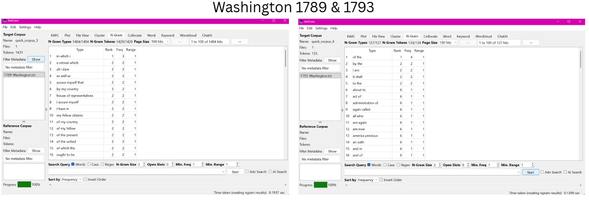
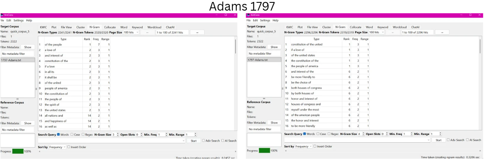

This website will compare the three most recent inaugural addresses which includes Bidens 2021 address and Trumps 2025 address. As well as the three earliest president addresses which includes the 1789, and 1793 Washington address.
I chose to compare these to examine if there are similarities between earlier presidents, and recent presidents in the things they address.
Ran analysis which included antconc, and voyant word clouds. Noticed some things such as the wording change from older addresses to recent ones. The tone shifts from "the people" to "we the people". I find this pretty interesting and wonder if its just because of changing times vocabulary or if this means something more deeper.

